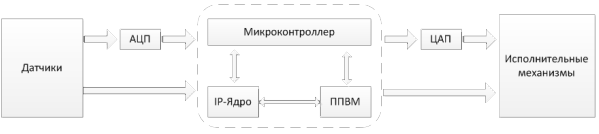

В этом разделе мы поговорим о структуре встраиваемых систем. Конкретно, мы обсудим структуру аппаратных средств, посмотрим на ее различные компоненты, причем основной компонент – микроконтроллер – обсудим более подробно в следующем разделе. На Рис. 1 схематически изображена общая схема. Встроенная система должна получать данные из внешнего мира, обрабатывать их и затем выводить данные во внешний мир. Так что, в первую очередь, она имеет набор датчиков для приема данных. Эти датчики могут получать информацию о внешнем мире по-разному, поэтому существует много различных типов подобных устройств.

Рис. 1 Устройство встроенных систем
Самый простой тип датчика – это кнопка или что-то подобное, которая получает данные в очень простом виде: нажата или не нажата. Система может получать и звуковую информацию, используя микрофон. Видеокамеры – это тоже датчики, которые получают информацию в виде изображения. Сенсорный экран позволяет не только выводить, но и получать информацию. И так далее – существует большое множество самых разнообразных типов датчиков, через которые встроенная система может получать информацию.
Итак, входящая информация поступает в систему и дальше она попадает в ее ядро, которое занимается ее обработкой. В конце этого процесса, когда система решила, что делать с поступившей информацией или какое решение нужное принять на ее основе, она должна выдать какие-то результаты. Чаще всего это означает – произвести какой-то действие во внешнем мире. Это делается с помощью исполнительных механизмов или приводов, которые показаны в правой части схемы на Рис. 1
Существует множество различных типов исполнительных механизмов: динамики воспроизводят звук, лампы позволяют системе выводить свет, экран также выводит свет, но в более детальном и «управляемом» виде.
Так что, если вы теперь посмотрите на встроенную систему, то увидите, что она находится посередине. Она получает данные от датчиков, что-то с ними делает, а затем посылает соответствующие сигнал на исполнительные устройства, чтобы заставить их что-то сделать в реальном мире в ответ на данные, которые она получила. В этом смысле встроенная система обеспечивает связь между датчиками и исполнительными механизмами.
В центре встроенной системы находится микроконтроллер. Более подробно мы обсудим его в следующих главах. Кроме микроконтроллеров могут быть и другие компоненты. Два из тех, которые встречаются достаточно часто, показаны на Рис. 1: это IP ядра и ППВМ.
IP это английское сокращение от intellectual property, то есть интеллектуальный продукт. IP-ядро представляет собой готовые блоки для проектирования устройств, например, это может быть готовая микросхема, которая выполняет одну функцию. Конечно «одну функцию» не надо понимать слишком буквально – IP-ядро может выполнять несколько функций, но это тесно связанные функции, ориентированные на какую-то конкретную задачу. То есть этот блок не является универсальной программируемой микросхемой общего назначения. Наоборот, это микросхема, которая просто умеет выполнять некоторый небольшой набор связанных между собой функций. Такие устройства могут быть очень полезны, и к тому же они дешевы при производстве в больших объемах. Пусть у вас есть достаточно общая система, имеющая большое количеством различных подсистем, как, например, мобильный телефон. Все сотовые телефоны должны выполнять определенные алгоритмы обработки звука. Можно сделать специальную микросхему, которая будет выполнять такую обработку и ее можно будет продавать производителям телефонов. Так как телефонов производят очень много, то и микросхем потребуется много. Чтобы сделать одну такую микросхему, потребуется много времени, труда и денег и это было бы крайне невыгодно, а вот если необходимо произвести сотни тысяч или даже миллионы подобных микросхем, то себестоимость каждой из них становится очень низкой.
Другой вид компонентов, который применяется во встроенных системах, это программируемые пользователем вентильные матрицы, или ППВМ.
Мы не будем рассматривать ППВМ в этом пособии, потому что это достаточно сложные, хотя и интересные устройства, но вы должны знать, что это такое. ППВМ – это аппаратные устройства, а если быть точнее – аппаратно программируемые микросхемы. Что это значит? Обычная микросхема состоит из огромного количества построенных на базе транзисторов логических вентилей. Вентили, в свою очередь, соединены между собой очень сложными многочисленными связями, по которым, собственно, и путешествуют управляющие и информационные сигналы. Схема объединения этих микроскопических устройств и обусловливает логику выполняемых микросхемой операций, но только эта схема «печатается» на заводе. В свою очередь ППВМ можно образно сравнить с набором юного мехатроника, состоящего из нескольких десятков транзисторов, резисторов, лампочек, кнопок, проводов, клемм, батареек, колесиков, приводов и прочих элементов. Имея этот набор, вы можете собрать из него аппаратное устройство, которое будет выполнять какую-то задачу.
Что это нам дает? Главное преимущество ППВМ в том, что они работают быстрее, чем обычные микропроцессоры, выполняющие те же функции, но программным путем. ППВМ может заменить специализированную микросхему, такую как IP-ядро. С ППВМ не требуется разработка и производство специальной микросхемы, так как можно взять ППВМ и запрограммировать ее на выполнение нужной задачи, а это гораздо дешевле. Специализированные же микросхемы, в свою очередь, могут работать еще быстрее, чем ППВМ, и они будут дешевле, если их производить в больших количествах, потому что они не включают в себя механизмы переконфигурирования, которые есть в ППВМ. Но это обосновано только для случая микросхем с широко востребованной логикой. Иными словами, все, как обычно, зависит от решаемой задачи, под которую вы подбираете наиболее эффективную конфигурацию.